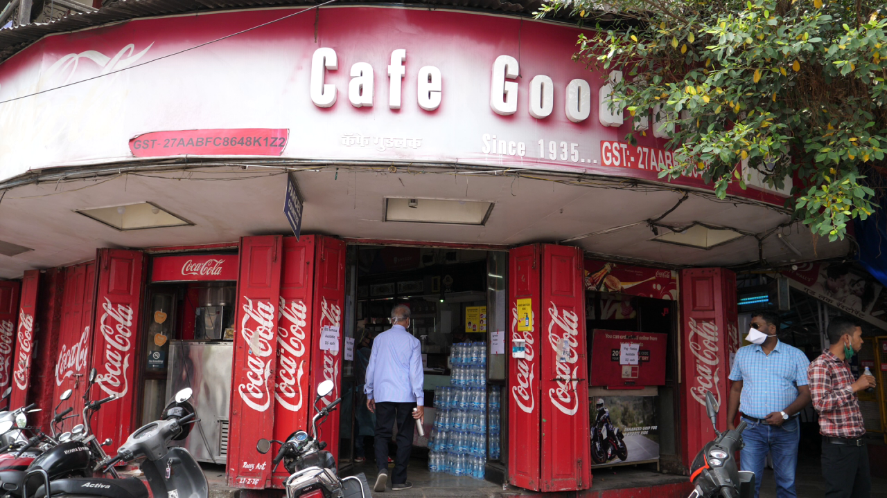
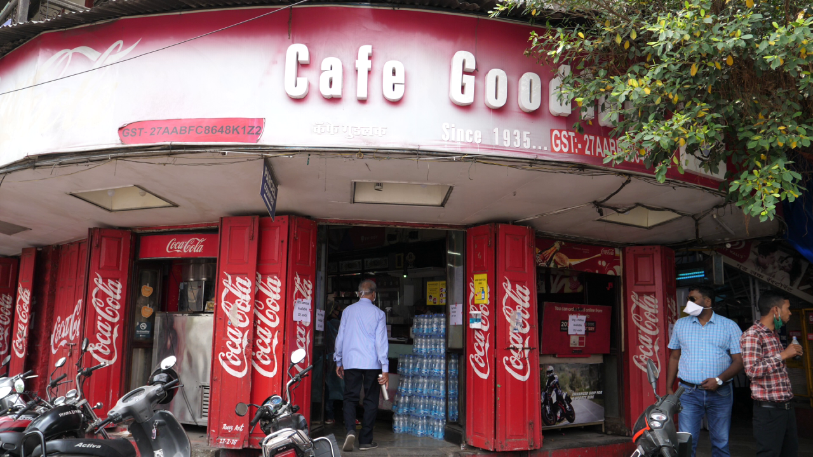
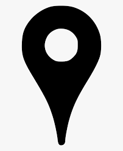

Goodluck Cafe
 

Category: Food
About Place:
Cafe GoodLuck is a popular Irani cafe-restaurant on the Fergusson College Road, in the Deccan Gymkhana area of Pune, India. Established in 1935 by Hussain Ali Yakshi, it is one of the oldest Irani places in Pune. was perhaps the first garden restaurant in Pune with 40-odd tables. Cafe GoodLuck is most famous for its bun maska/bun omelette and Iranian tea among the other dishes. The place is always crowded and especially popular among the youngsters. Cafe GoodLuck has no other branch.

Season to visit: Any
Preferred time: 9:00 am - 11:00pm
Type : Family, Friends
Famous For:Bun maska/Bun omelette /Iranian tea / Kheema Pav
Author : Siddhant Sonawane